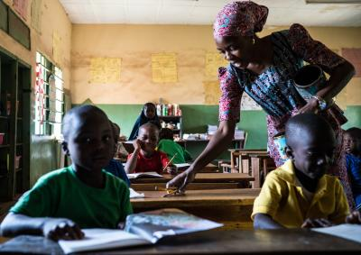

As we know, Nigeria is our main focus. Northern regions is one of the poorest areas in Nigeria. Places like; bauchi, kano, bornu, kaduna etc The rate of unemployment is very high,Nigeria’s unemployment rate stands at a 23.1 percent. This affects the citizens of Nigeria a lot. Citizens are suffering from lack of food, poor education etc. The main cause of poverty in Nigeria is CORRUPTION, Governments tend to embezzle money in this country.
So many people live in poverty, mostly homeless or living in houses with low maintenance;no light or clean water. There is a bad educational system and most people end up being illiterate or not having a proper education. Some of this people that went to school can’t even get a real job.
Some kids hawk on the street to help the family with money and it’s not even really save for the kids because they could get hit by a car. People hawk on the street to get a little money they can use to get something to feed themselves, even though there is no good profit in this
One of the main effects of poverty is poor health, there is a very poor health care and so many people can’t afford good health care. For instance HIV/AIDS,malaria and yellow fever are preventable diseases that occur in Nigeria and mostly poor people die of this diseases due to the lack of financial assistance. Also access to safe water supply has become more common although not universal
There is a very big dissimilarity between the poor and rich in Nigeria. Poor people in Nigeria has 80% land space and 20% resources while the Rich have 20% land space and 80% resources. If you are a poor man in this country you can't really get justice in cases. Rich people have higher advantages than poor people in every way. Rich people have a lot of advantages than the poor people. For example, a rich person has the opportunities to reach or go to certain places. There is inequality between the poor and the rich and governments don’t really care about this.
There is a large difference between poverty in Nigeria and United States which are ;